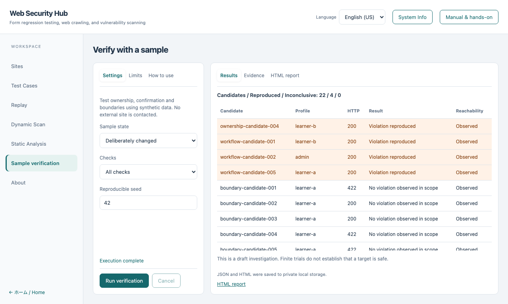

Sample verification hands-on
日本語 · Basic course
Compare a baseline, a deliberately changed sample, and a fixed sample using synthetic data.
No external target, real credentials, model or API key is required.
Available in desktop version 2.0.0 and later.
1. Open the verification workspace
Choose Sample verification in the left navigation. This workspace uses its own sample, independently of the site selected in site management.
Settings, Limits and How to use stay on the left; Results and Evidence stay on the right. Long results scroll within their panel.
2. Check baseline
Select Baseline, keep All checks, and choose Run verification.
Default settings execute 22 candidates with zero reproduced violations. Including the independent normal controls, this consumes 44 trials.
“No violation observed in scope” describes these trials; it is not proof of safety or a formal VEX statement.
3. Compare the deliberately changed sample
Select Deliberately changed and run again. Four known violations are reproduced and shown at the top.

| Check |
What to inspect |
| Boundary and Unicode |
Participant limits, length, Unicode normalization and omitted fields |
| Ownership |
Owner A, another user B, admin and anonymous access to a synthetic record |
| Confirmation workflow |
A confirmed normal control compared with a skipped confirmation |
HTTP 200 alone does not prove a violation. The verifier correlates server events, profiles, source fingerprint, actual response or committed state.
4. Inspect evidence and reports
Click a result row, or focus it and press Enter, to display its Evidence.
Evidence includes trial IDs, profile, reachability and source digest; it excludes cookies and passwords.
Use HTML report to view the saved bilingual report inside the workspace. JSON and HTML also remain in the application's private data directory.
5. Check fixed, cancellation and limits
- Run Fixed: reproduced violations return to zero.
- Choose Cancel during execution to save a partial result.
- Use Limits to bound candidates, trials including normal controls, and elapsed time. Reaching a limit is distinguished from completed execution.
- Open Manual & hands-on without leaving the workspace. Closing it preserves inputs and results.
The same seed, configuration and code reproduce the candidate order. Missing instrumentation, source mismatch and failed normal controls remain inconclusive.
Use the same verifier from the CLI
npm run verifier:run -- --mode baseline
npm run verifier:run -- --mode changed
npm run verifier:run -- --mode fixed
Source dependencies are required for CLI use. Ordinary application operations need no commands.